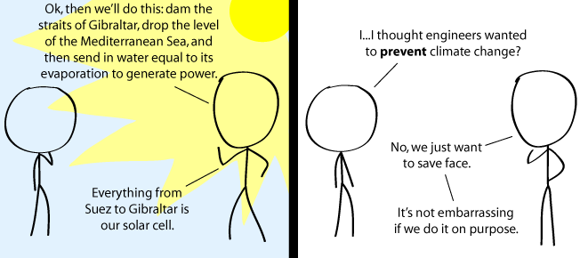

Comic JK 707
When I Feel Like It
⇤
<
?
>
⇥

⇤
<
?
>
⇥
Forum
.
RSS
.
Digg
.
Facebook
.
Reddit
.
Twitter
.
Stumbleupon
Enter your thoughts on number 707 here. Please, no spamming, trolling, phreaking, or damming. ^^^^^^Wat Wo. (abbreviation applied) ... NYAN NYAN NYAN NYAN NYAN NYAN NYAN NYAN NYAN NYAN NYAN NYAN NYAN NYAN NYAN NYAN... BATMYAN! --- NYAN FREE ZONE BELOW THIS LINE --- >Aww... >Yeah. That NYAN-troll is always deleting my wooooos. >>That bronie is pretty nice. He just puts stuff in the boxes. Since when do **** engineers want to prevent climate change? They just want in on the action. Scientists are the true saviors of mankind (& hippies--back to the land man!). >a lifestyle of "back to the land" generally precludes electronics and electricity and all of the conveniences they bring... and also tends to involve a lot of hard manual labour... which appeals in an "oh gosh, how cool" sort of way to a lot of middle-class college students who don't actually have to live like that for the rest of their life... and who extol the virtues of "back to nature" while drinking a specific brand of bottled water, wearing a specific brand of trainers, and talking about it on their specific brand of smartphone,( all of which were probably made on a different continent, don't forget )... overlooking the sad fact that where there is hard manual labour, there will be slavery unless there is machinery to automate the task... >qft But if the water is already evaporating from the Mediterranean (and it is; the net flow through the straits is inwards), why do we need to lower its level or dam it? Turbines in the straits - generating power from the sun shining on the sea. >Water level. You get way more energy from water dropping 100 meters than from flat, flowing water. > Better yet, the Drake Passage. > Try run of river turbines. Sea/Ocean currents are slow or in areas where there's no convenient mounting point. The Atlantropa project had the perfect solution for the dry Venice problem: just build a 100km long canal to the lowered Adriatic sea! **** nyan